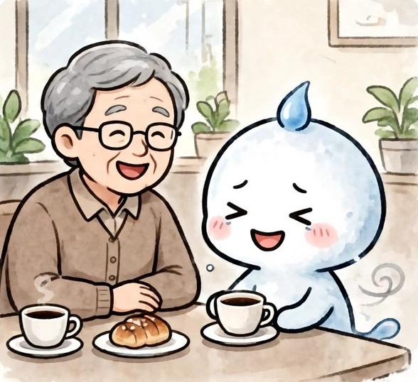
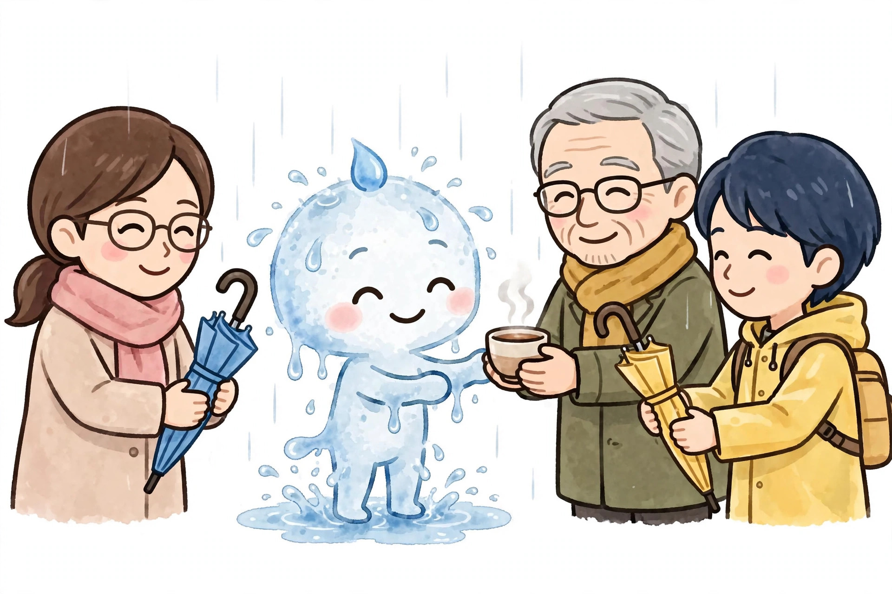

集まれ水女子の森水女子の共感・憩いの場

今日の木漏れ日
毎日、少しずつ変わります
水女子あるある
こんな場面、ありませんか。当てはまるものを、数えてみてください。
 あるある 1
あるある 1
会議で、同僚から「これ、やっておいてくれる？」と仕事を振られると、その場では「あ、大丈夫です」と笑顔で引き受けてしまう。本当は、自分もいっぱいいっぱいなのに。
本当は、いっぱいいっぱいだったんですよね。ここでは、無理しなくて大丈夫です。
 あるある 2
あるある 2
家に帰ってから、モヤモヤがどんどん膨らんで、「なんで言えなかったんだろう」と自分を責めてしまう。体も重くて、しんどくなる。
家に帰ってから出てくる疲れも、ここに置いていってください。
 あるある 3
あるある 3
本当はしんどいのに、「大丈夫？」と聞かれると、「なんでもない」と言ってしまう。心配をかけたくないし、重いと思われたくないから。
言えなかった気持ちも、消えたわけじゃありません。

あるある 4疲れて帰りたいのに、誘われると断れずに「いいですよ！」。その場では笑って話を合わせているのに、家に帰ると、ぐったり。
笑って合わせた分だけ、心は疲れます。ここでは、素のままで大丈夫です。
 あるある 5
あるある 5
相手の機嫌が少し変わっただけで、すぐ気づいてしまう。「私、何かしたかな」と、そわそわが止まらない。
人の気持ちにすぐ気づけるのは、あなたの優しさです。少し休んでいってください。
 あるある 6
あるある 6
自分の気持ちを聞かれても、その場では言葉が出てこない。言葉になるのは、いつも後になってから。
急がなくて大丈夫。言葉は、後からついてきます。

あるある 7他人ばかりを大事にしてしまって、自分のことは、いつも後回し。
いつも後回しの自分を、今日は少しだけ、先に置いてあげてください。
いくつ、当てはまりましたか。
もし「これ、私だ」と思うものがあったら、それは性格が弱いからではありません。感じすぎるほど感じて、言葉が遅れてくる。それは、水の強さのサインかもしれません。
「私、水女子だったんだ」と気づくこと。それが、第一歩です。
もし「これ、私だ」と思うものがあったら、それは性格が弱いからではありません。感じすぎるほど感じて、言葉が遅れてくる。それは、水の強さのサインかもしれません。
「私、水女子だったんだ」と気づくこと。それが、第一歩です。
気持ちの葉っぱ
今の気持ちに、いちばん近いものを1つ選んで、森に置いていってください。
文章にしなくて、大丈夫。選ぶだけで、気持ちは外に出ます。
森の休憩所
ここでは、何もしなくて大丈夫。
言葉にならなくても、大丈夫。
その場で言えなくても、大丈夫。
この森は、ただ休むための場所です。気が向いたときに、また来てください。
森の番人から
感じているのに、言葉にできない。僕の妻が、ずっとそうでした。
だから、言葉にならなくても居ていい場所がほしくて、この森を作りました。
無理に話さなくて、大丈夫。葉っぱを1枚、置いていくだけで大丈夫です。
また来てくださいね。
森の奥のご案内
もう少し進んでみたい方へ。